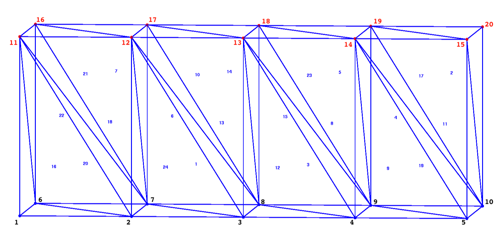

Appendix A.2 Geometry
Three files describing geometry of the computational grid are required, and a fourth is optional. It is anticipated that these files will be produced by the meshing software LaGriT, although any mesh generation software can be used provided the output is converted to the required format.
The following image shows the tetrahedral mesh element and node numbers for the examples below. 
Figure A2-1. Example Mesh. Element edges and numbers are blue. Mesh node numbers are black (bottom) and red (top).
A.2.1 Mesh fehmn
The fehmn file provides the tetrahedral information (location of nodes and lists of nodes that compose each element). See the LaGriT and FEHM manuals for details. In Walkabout Version 1.0, the fehmn file must be provided in ASCII format.
This example shown in Figure A2-2 is a mesh with 20 nodes and 24 tet (4 node) elements.
coor
20
1 0.000000000000E+00 0.000000000000E+00 0.000000000000E+00
2 5.000000000000E+00 0.000000000000E+00 0.000000000000E+00
3 1.000000000000E+01 0.000000000000E+00 0.000000000000E+00
4 1.500000000000E+01 0.000000000000E+00 0.000000000000E+00
5 2.000000000000E+01 0.000000000000E+00 0.000000000000E+00
6 0.000000000000E+00 8.000000000000E+00 0.000000000000E+00
7 5.000000000000E+00 8.000000000000E+00 0.000000000000E+00
8 1.000000000000E+01 8.000000000000E+00 0.000000000000E+00
9 1.500000000000E+01 8.000000000000E+00 0.000000000000E+00
10 2.000000000000E+01 8.000000000000E+00 0.000000000000E+00
11 0.000000000000E+00 0.000000000000E+00 8.000000000000E+00
12 5.000000000000E+00 0.000000000000E+00 8.000000000000E+00
13 1.000000000000E+01 0.000000000000E+00 8.000000000000E+00
14 1.500000000000E+01 0.000000000000E+00 8.000000000000E+00
15 2.000000000000E+01 0.000000000000E+00 8.000000000000E+00
16 0.000000000000E+00 8.000000000000E+00 8.000000000000E+00
17 5.000000000000E+00 8.000000000000E+00 8.000000000000E+00
18 1.000000000000E+01 8.000000000000E+00 8.000000000000E+00
19 1.500000000000E+01 8.000000000000E+00 8.000000000000E+00
20 2.000000000000E+01 8.000000000000E+00 8.000000000000E+00
0
elem
4 24
1 3 12 7 8
2 10 15 19 20
3 4 13 8 9
4 9 14 19 10
5 9 14 18 19
6 7 12 17 8
7 7 12 16 17
8 4 13 9 14
9 4 14 9 5
10 8 12 17 13
11 5 14 10 15
12 3 13 8 4
13 3 12 8 13
14 8 13 17 18
15 8 13 18 9
16 1 11 6 2
17 14 15 19 10
18 2 11 7 12
19 9 14 10 5
20 2 11 6 7
21 7 11 16 12
22 6 11 16 7
23 9 13 18 14
24 2 12 7 3
stop
Figure A2-2. Example fehmn mesh file.
A.2.2 Geometric Coefficients stor
The stor file represents a sparse coefficient matrix and is used for solving PDE on a triangular or tetrahedral Delaunay mesh. The stor format is written for FEHM input and includes information about nodal connectivity and interface areas. Walkabout requires the ratio of scalar area to distance for each node-to- node connection provided in this file.
In Walkabout Version 1.0, the stor file must be provided in ASCII format.
This example shows the stor file written for the mesh in Figure A2-1.
The first 2 lines are header lines with file and model information. The third line are the matrix parameters NCOEFS, NUM_NODES, NCOEF+NUM_NODES+1, NUM_AREA_COEF, and NCONNECT_MAX.
This is followed by sections for the voronoi volumes (for each node), Row counts, Row entries, and indices into area coefficients. The last section is the list of area coefficients. In general this is the area of each face of the Voronoi polygon associate with node i, face j.
See full description at LaGriT STOR.
fehmstor ascir8i4 LaGriT Sparse Matrix Voronoi Coefficients
Thu Oct 17 13:41:37 20193-D Linear Diffusion Model (matbld3d_astor)
4 20 113 1 5
4.000000000000E+01 8.000000000000E+01 8.000000000000E+01 8.000000000000E+01 4.000000000000E+01
4.000000000000E+01 8.000000000000E+01 8.000000000000E+01 8.000000000000E+01 4.000000000000E+01
4.000000000000E+01 8.000000000000E+01 8.000000000000E+01 8.000000000000E+01 4.000000000000E+01
4.000000000000E+01 8.000000000000E+01 8.000000000000E+01 8.000000000000E+01 4.000000000000E+01
21 25 30 35 40
44 48 53 58 63
67 71 76 81 86
90 94 99 104 109
113
1 2 6 11 1
2 3 7 12 2
3 4 8 13 3
4 5 9 14 4
5 10 15 1 6
7 16 2 6 7
8 17 3 7 8
9 18 4 8 9
10 19 5 9 10
20 1 11 12 16
2 11 12 13 17
3 12 13 14 18
4 13 14 15 19
5 14 15 20 6
11 16 17 7 12
16 17 18 8 13
17 18 19 9 14
18 19 20 10 15
19 20
4 1 3 3 1
4 1 2 2 1
4 1 2 2 1
4 1 2 2 1
4 3 3 3 4
1 3 2 1 4
1 2 2 1 4
1 2 2 1 4
1 2 3 1 4
3 3 4 1 3
2 1 4 1 2
2 1 4 1 2
2 1 4 1 2
3 1 4 3 3
3 4 1 2 2
1 4 1 2 2
1 4 1 2 2
1 4 1 3 3
1 4 0 0 0
0 0 0 0 0
0 0 0 0 0
0 0 0 0 0
0 0 0
22 27 32 37 42
46 51 56 61 66
69 74 79 84 89
93 98 103 108 113
-3.200000000000E+00 -2.500000000000E+00 -1.250000000000E+00 0.000000000000E+00
Figure A2-3. Example stor geometric coefficients file.
A.2.3 Element adjacency list ealist
The ealist file provides information about element adjacency, which should not be confused with nodal connectivity. Element adjacency is not needed by FEHM, but is required by Walkabout. See the LaGriT manual for details on how to produce the element adjacency lists.
This example shows the ealist file written for the mesh in Figure A2-1.
Write adjacency information to an ascii file. Write list of all elements adjacent to each element.
File format: elem_number ean_num e1 e2 ... en where -99 indicates an outside boundary.
1 4 6 -99 24 13
2 4 -99 -99 17 -99
3 4 15 -99 12 8
4 4 17 -99 5 19
5 4 -99 -99 23 4
6 4 10 -99 7 1
7 4 -99 -99 21 6
8 4 23 9 3 -99
9 4 19 -99 8 -99
10 4 -99 14 6 13
11 4 17 -99 19 -99
12 4 3 -99 13 -99
13 4 10 12 1 -99
14 4 -99 -99 10 15
15 4 23 -99 14 3
16 4 20 -99 -99 -99
17 4 2 4 -99 11
18 4 21 24 20 -99
19 4 11 -99 4 9
20 4 22 -99 16 18
21 4 -99 7 22 18
22 4 21 -99 -99 20
23 4 -99 5 15 8
24 4 1 -99 18 -99
Figure A2-4. Example ealist element adjacency file.
A.2.4 Boundary Nodes cbound
The cbound (closed boundary) file provides a list of nodes on boundaries that are closed to transport. It has the same format as the LaGriT outside zone file, but excludes outflow boundaries. A simple strategy for producing the cbound file is to use LaGriT to produce a list of all outside nodes, and then remove those nodes associated with outflow boundaries.
In Version 1, external faces of cells on a boundary must aligned with the principal directions in the coordinate system. That is, boundary faces must be top, bottom, left, right, back or front. See the LaGriT manual. It is important to recognize, that this restriction only applies to cell faces on boundaries. Cell faces internal to the model have no such restrictions. A node/cell may have more than one no- transport boundary face associated with it, in which case it would appear more than once in the cbound file.
For nodes on a no-transport boundary, Walkabout first attempts to reconstruct the nodal velocity using the unconstrained algorithm, Eq. 5. If this procedure results in inflow into the domain at the boundary node, the reconstructed velocity is used as is. If the unconstrained procedure results in outflow on a no-transport boundary, then the velocity reconstruction is repeated using the constrained procedure Eq. 7 to enforce the no-flow condition on the cell’s boundary face. Particles are not allowed to disperse across boundaries that are closed to transport.
In the walkabout.files, we have a line:
cbound:outside_top_noflow.zone
The file outside_top_noflow.zone has a list of node numbers that are the top outside of the mesh as shown in Figure A2-1 (red nodes). There are 10 nodes in this region and there is only one zone defined. The last line must be blank or start with the word "stop".
zone
00001 top
nnum
10
11 12 13 14 15 16 17 18 19 20
stop
Figure A2-5. Example cbound noflow boundary zone.